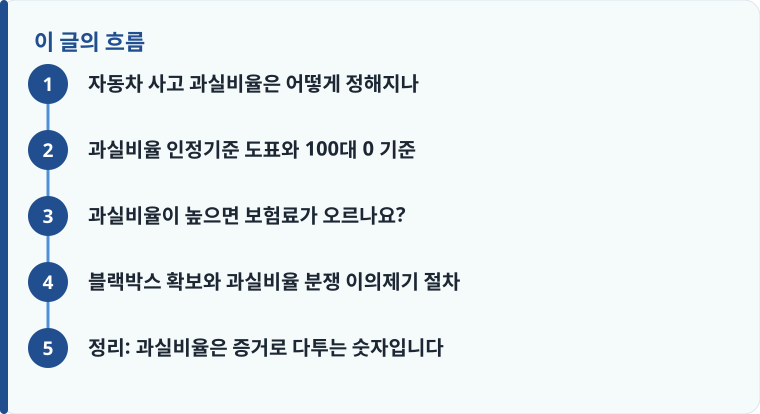

과실비율은 손해보험협회의 ‘과실비율 인정기준’ 도표에 따라 기본과실을 정하고, 신호위반·중앙선 침범 같은 수정요소로 ±10~20%씩 조정해 결정됩니다.
후미 추돌, 정차·주차 차량 충돌처럼 한쪽이 사고를 피할 수 없던 상황에서 과실 100대 0 기준이 적용됩니다.
비율에 동의하지 못하면 과실비율 분쟁심의위원회에 이의제기할 수 있고, 블랙박스·현장사진이 결정적 증거가 됩니다.
자동차 사고 과실비율은 어떻게 정해지나
자동차 사고 과실비율은 사고 상황의 유형별 ‘기본과실’을 먼저 정하고, 개별 사정에 따라 수정요소를 더하거나 빼서 최종 비율을 산정합니다. 기준이 되는 자료는 손해보험협회가 정리한 ‘자동차사고 과실비율 인정기준’으로, 신호등 있는 교차로, 좌회전, 차로 변경, 보행자 사고 등 수백 가지 상황별 도표가 담겨 있습니다. 예를 들어 신호등 없는 동일 폭 교차로에서 만난 두 차량은 기본과실이 50대 50에서 출발하는 식입니다.
여기에 신호위반, 중앙선 침범, 과속, 어린이·노인 보호구역 사고 같은 사정이 있으면 한쪽에 10~20%의 수정요소가 가산됩니다. 즉 처음에 60대 40이었더라도 한쪽이 방향지시등을 켜지 않았거나 서행 의무를 지키지 않았다면 70대 30으로 조정될 수 있습니다. 사고 접수와 초기 대응이 궁금하다면 자동차보험 사고접수는 어떻게 하는지를 함께 확인해 두면 도움이 됩니다.
과실비율 인정기준 도표와 100대 0 기준
많은 운전자가 ‘내가 잘못한 게 없으니 당연히 100대 0’이라고 생각하지만, 실제로 과실 100대 0 기준이 적용되는 상황은 한쪽이 사고를 사실상 피할 수 없었던 경우로 한정됩니다. 대표적으로 정차·주차 중인 차를 뒤에서 들이받은 사고, 앞차를 뒤차가 추돌한 후미 추돌, 중앙선을 넘어온 차와의 충돌, 신호를 지켜 직진하다 신호위반 차량과 부딪힌 경우 등이 여기에 해당합니다.
반대로 양쪽 모두 진행 중이었거나 서로 주의의무를 위반했다면 100대 0이 인정되기 어렵습니다. 급차로 변경, 교차로 동시 진입, 주차장 통로에서의 접촉처럼 양측에 조금씩 책임이 있는 상황에서는 90대 10, 80대 20처럼 일부 과실이 잡히는 것이 일반적입니다. 도표상 기본과실이 100대 0이더라도 수정요소로 뒤차에 20% 과실이 붙는 경우가 있어, 결과가 달라질 수 있는 자동차보험의 대물·대인 보상 구조를 이해해 두는 것이 좋습니다.

과실비율이 높으면 보험료가 오르나요?
과실비율은 보험금 분담뿐 아니라 다음 해 보험료에도 직접 영향을 줍니다. 자동차보험은 사고 건수와 크기에 따라 할인·할증 등급이 조정되는데, 과실이 있는 사고는 대개 3년간 할증 요인으로 반영됩니다. 반대로 과실이 0인 무과실(100대 0) 사고는 2017년부터 본인의 보험료 할증 대상에서 제외되어, 상대방 보험사로부터 구상으로 손해를 회수합니다.
자기부담금에서도 차이가 납니다. 본인 차량 수리 시 자기차량손해 담보의 자기부담금은 보통 손해액의 20%, 최소 20만 원에서 최대 50만 원 범위로 정해지는 경우가 많은데, 과실비율이 높을수록 상대에게 받지 못하고 스스로 부담하는 금액이 커집니다. 사고 이후 보험료가 실제로 얼마나 오르는지는 사고 한 번에 자동차보험료가 얼마나 할증되는지를 참고하면 감을 잡기 쉽습니다.
작성·검수 기준
이 글은 특정 보험사 상품을 권유하려는 것이 아니라, 자동차 사고 과실비율이 정해지는 원리와 이의제기 방법을 일반적인 기준으로 설명하기 위해 작성했습니다. 과실비율 인정기준의 기본과실과 수정요소는 사고 유형·도로 상황·법령 개정에 따라 달라질 수 있습니다.
실제 과실비율과 보험금 지급은 사고 사실관계, 증거, 보험회사 심사에 따라 달라지므로 보험금 분쟁이 생겼을 때 대처하는 방법을 함께 확인하는 것이 정확합니다.
블랙박스 확보와 과실비율 분쟁 이의제기 절차
과실비율은 결국 ‘누가 어떤 증거를 갖고 있느냐’로 결정됩니다. 블랙박스 영상과 현장사진은 진행 방향, 신호 상태, 속도, 충돌 지점을 객관적으로 보여 주기 때문에 수정요소를 다투는 데 가장 강력한 자료입니다. 제시된 과실비율에 동의할 수 없다면 아래 순서로 대응합니다.
- 사고 직후 블랙박스 영상을 원본 그대로 저장하고, 차량 위치·파손 부위·스키드마크를 여러 각도로 촬영합니다.
- 담당 손해사정 담당자에게 과실비율 산정 근거(적용한 도표 항목과 수정요소)를 서면으로 요청해 확인합니다.
- 양측 보험사가 과실을 다투면 손해보험협회 산하 ‘자동차보험 과실비율 분쟁심의위원회’에 심의를 청구합니다.
- 심의 결과에도 이견이 있으면 금융감독원 분쟁조정을 신청하는 절차를 밟거나 민사소송을 검토합니다.
- 운전자보험의 변호사선임비용 등 관련 담보가 있는지 운전자보험에 꼭 넣어야 할 특약에서 함께 점검합니다.
정리: 과실비율은 증거로 다투는 숫자입니다
과실비율은 도표상 기본과실에서 출발해 수정요소로 조정되는, 근거가 분명한 숫자입니다. 100대 0은 한쪽이 사고를 피할 수 없던 예외적 상황에서만 인정되며, 대부분의 사고는 일부 과실이 나뉩니다. 이 비율이 보험료 할증과 자기부담금까지 좌우하므로, 블랙박스와 현장사진을 확보하고 납득이 안 되면 분쟁심의위원회 이의제기 절차를 적극 활용하는 것이 좋습니다.
다른 보험 정보 글이 궁금하다면 보험지식 블로그에서 이어 읽어 보세요. 가입 전에는 반드시 약관과 상품설명서를 확인하는 것이 가장 안전한 방법입니다.